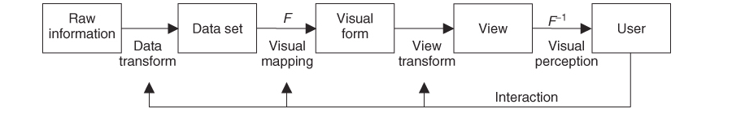

Toward a Deeper Understanding of the Role of Interaction in Information Visualization
7 Categories of Interaction Techniques
Funny Part!!!
Bad Examples of Data Representation
Networkism
Information Visualization
Big Data
The Cloud
Collecting Data isn't a problem anymore
How to represent it and make it usable?!
The Goal of Visual User Interfaces
Providing Insight to the Users
Insight
Related to the Sense of Vision
Link between Digital Stored Data and the Human Mind
Making Abstract Infromation Perceptible
Mental Models that represent the Data
This process might be complex
Some Design Guidelines have been developed
Design Guidelines
Don't mislead the Users and don't hide any type of Information
Complexity: Data has never a unique structure, multiple types of variables
Scalability: There's never enough space! There's need for Interactive Techniques
3 Main Steps to follow
The General Design Process
Requirements Analysis Phase, which has 2 primary inputs: study the characteristics of the information that has to be visualized and identify type of Insight that has to be transmitted
Design of the Visualization System: decide the kind of representation to use
Evaluation: Usability Testing and collecting feedback about the system
The Visualization Pipeline
The Computational Process that converts Information into a visual form
The User is able to interact with it and infer new knowledge
It's made out of 4 different steps
Transformation of the Data into a well organized data-format
Map the Data into a visual form through the use of a particular f(x)
Create Views based on the visual form according to the priorities of the Users
Make the whole process dynamic and allow the Users to interact with it
The Visualization Pipeline

Information Structure
Understanding the Visualization Pipeline is a good start but not enough
Doesn't explain how to deal with more complex data
In order to build better systems:
Different Types of Data
Different Ways of Representing it
Tabular Structures
The most Famous way of Representing Data
Basic Matrix with rows representing entities and columns attributes
Examples:
Microsoft Excel
Matlab and R
Problem of Scalability: Complexity increases with the number of Attributes
How to represent High Dimensional Data?
TableLens
Sorting Data just by 1 Attribute + Simultaneous sort of all the next attributes
Spatial and Temporal Structures
Characterized by the Multiple Components
Integration of Spatial Environment + Passing of Time
Active Navigation
Manipulation by the User of the Visualization System
Example http://www.zingchart.com/gallery/chart/#!timeline-style-map
Trees and Networks
Based on Connections
Related to computational Graph Theory: vertices = entities that are related via connections = relations
Overall Idea is to present a Hierchical Structure given by parent-child connections
Trees
May be very space consuming
Impossible to represent all connections between nodes
Represent only the main nodes and implement deep navigation
Schneiderman's Mantra: Overview first, zoom and filter, details only on demand!
Provide the User with a general Overview of the Information Space
Implement Exploration Tools
Manipulate the Data in order to gain more detailed Information
Pack as much information as possible in the most clearest way
Ennesimo Esempio Fancy
How to create better Overviews?
Reducing Data Quantity
Grouping similar entities and restructure the dataset
New aggregates with less total entities
Clustering Techniques: Knn, DBSCAN
Principle Component Analysis: reducing the dimensionality of the attributes and limiting the information loss
Miniaturizing Visual Gliphs
Keep the original Data
Reduce the gliphs that represent the mappping
Navigation Strategies
Induce the User to explore the Data: good Navigation Strategies
Zoom + Pan: Opportunity to zoom dynamically into the information space and zoom back in order to return to the general Overview
Overview + Detail: Multiple views are used to display the general overview together with detail view at the same time. Connection between the general Overview and the relative detailed Information Space
Focus + Context: Expands the region of Focus showing its details by pushing the surrounding room in the back
Nice Example of Navigation
Toward a Deeper Understanding of the Role of Interaction in Information Visualization
Active Interaction is as impportant as the visualization part!
It doesn't play a secondary role in Information Visualization
Representation and Interaction aren't mutually exclusive
Create a New Discipline that supports Visual Analytics focused on Interaction
How to define Interaction?
Finding a solid definition is challenging
The communication between User and the System
Direct Manipulation
Instantaneous Change
Help performing a task in HCI
Helps us understanding the Design Space of Interaction
Multiple Ways to Interact in line with Norman's Action Cycle
7 main categories
Based on the notion of User Intent
Similar techniques have been clustered together
Comprehensive List with the main concepts
Select: make something interesting
Explore: show me something else
Reconfigure: show me a different arrangement
Encode: show me a different representation
Abstract/Elaborate: show me more or less details
Filter: show me something conditionally
Connect: show me related items
Do they match with the previous paper examples?!
Selecting
Providing the User with the ability of marking
In order to keep track of the interaction items are made visually distinctive
Selecting Technique is combined with other Interactive ones
Possible Example may be TableLens
Exploring
Examine a different subset of data cases
Linked to the Big Data issue of space
Screen limitations
Human Processing Limitations
The Strategy:
Showing a particular subset
Provide the User with some Insight about the Dataset
Encourage Exploration with direct manipulation methods
Exploaration in Trees
Much Better then This
Reconfiguring
Showing different perspectives
Changing the spatial arrangement of representations
Idea is to reveal hidden relatioships in the data
Sorting
Rearranging
NETWORKS!
Reconfiguring Romeo and Juliet's Love Story
Encoding
Enable User to alter the visual representation of the data
Different from Reconfiguration: more focus is put on the visual properties and not the logical ones
Color encoding
Resizing
Change Orientation
Change the Shape
Abstract/Elaborate
Provides the User with the ability to adjust the level of abstraction of the data representation
Related to the User's Intent
Broad View: if the intent is to have a general overview
Details on demand operations if the User wants more specific information with Zoom in/Zoom out techniques
In line with: Schneiderman's Mantra: Overview first, zoom and filter and details later!
Filtering
Part of the dataset is shown only conditionally
The dataset is presented under specific conditions that can be changed
Only the visualization changes, the original data remains the same!